WWDC 2022: Swift-DocC and Xcode 14
Find hereafter a detailed summary of two videos that belong to a taxonomy of some WWDC footages.
The original videos are available on the official Apple website (session 110368, session 110369).
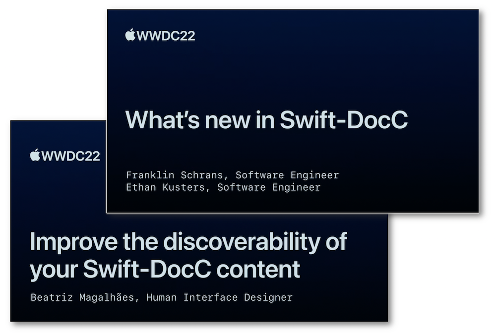
"Join us for an exciting update on Swift-DocC and learn how you can write and share documentation for your own projects. We'll explore improvements to Swift-DocC navigation and share how you can compile documentation for application targets and Objective-C code. We'll also show you how to publish your content straight to hosting services like GitHub Pages."
"Explore the navigation experience for Swift-DocC on the web. We'll show you how you can organize and optimize your content to help guide developers through documentation about your frameworks and applications. We'll also share enhanced techniques to help readers browse your documentation with ease."
The outlines of this speech are indicated hereunder:
Most of the illustrations are parts of the Apple presentations and may be available at the Resources section inside the Overview sheet of each video.
Hereafter, the underlined elements lead directly to the playback of the WWDC video at the appropriate moment.
Writing documentation #
Besides the Swift packages, Swift-DocC can be used for all the app projects in Xcode 14 and the basic steps for authoring a documentation are detailed below to start under the best conditions.
The Xcode menu is the best way to open a new documentation window and start visualizing the first page of documentation.
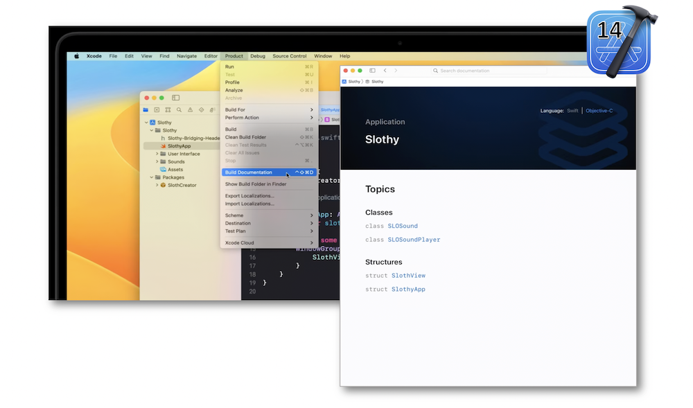
Explanations and piece of code in the documentation comments must have a specific syntax to describe a view.
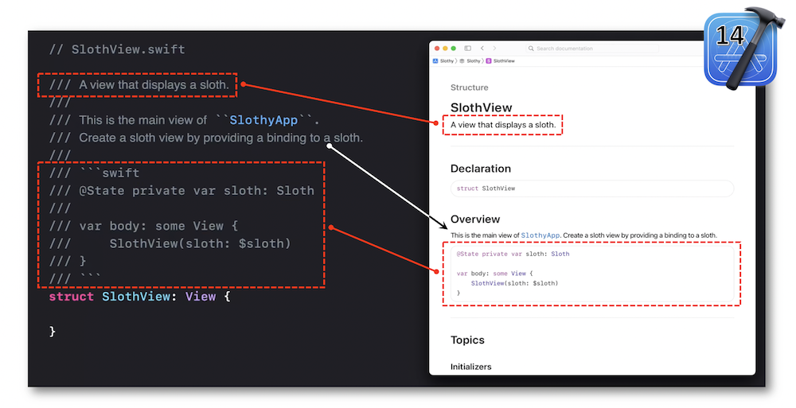
Documenting an initializer follows the same rules as those for describing a view.
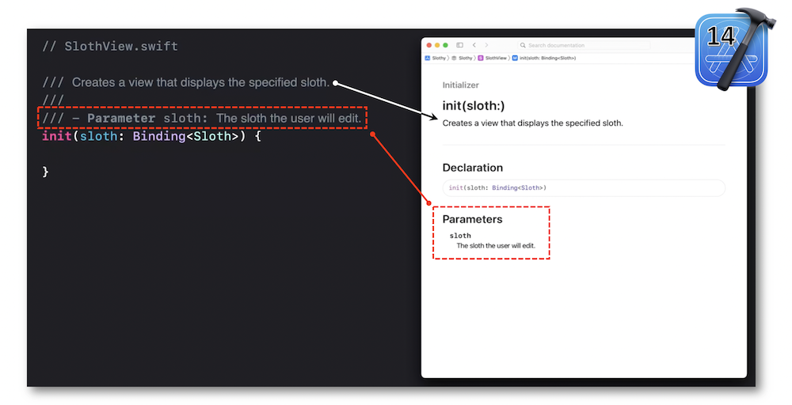
The process for creating a top-level page is made up of few steps that give rise to a nice start to a documentation catalog.
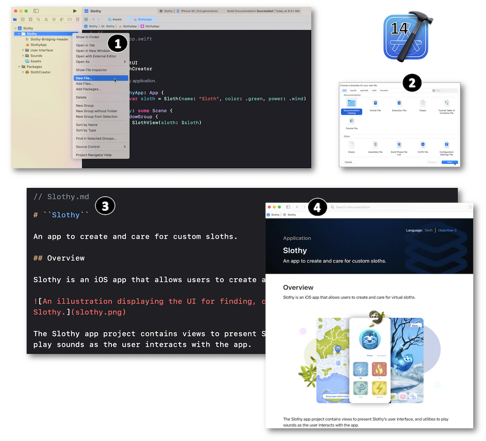
A more detailed conception of this page type is also provided to understand the rationale behind and be sure that every subtle elements are well apprehended.
Swift-DocC takes into account Objective-C and enables a fast visual transition between the languages through a native toggle graphic element.
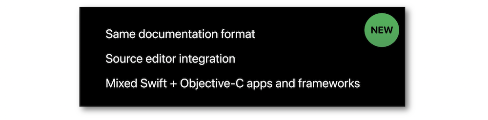
Authoring improvements #
The Swift-DocC's automatic organization is efficient to take a glance at the tutorials, articles, protocols and structures.
However, three milestones should be followed to optimize the content.
Besides these elements to be reminded, some other aspects should be mentioned to get the best result:
- Importance of having a topic group title that is 'clear and descriptive'.
- Each and every group titles must be 'mutually exclusive'.
- Using 'serendipity' may be an interesting means of discovery.
The progressive implementation of these different items gives rise to an optimized result that offers an easy and fluid discovery of the content.
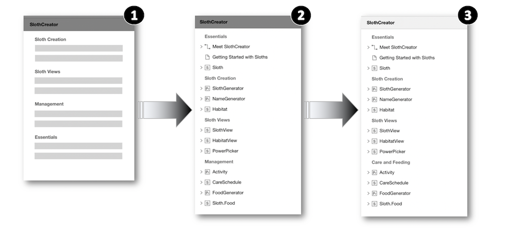
Publishing #
Export the DocC archive (built documentation) and readily deploy its contents at the root of a web server is straightforward thanks to its new compatibility with most web servers.
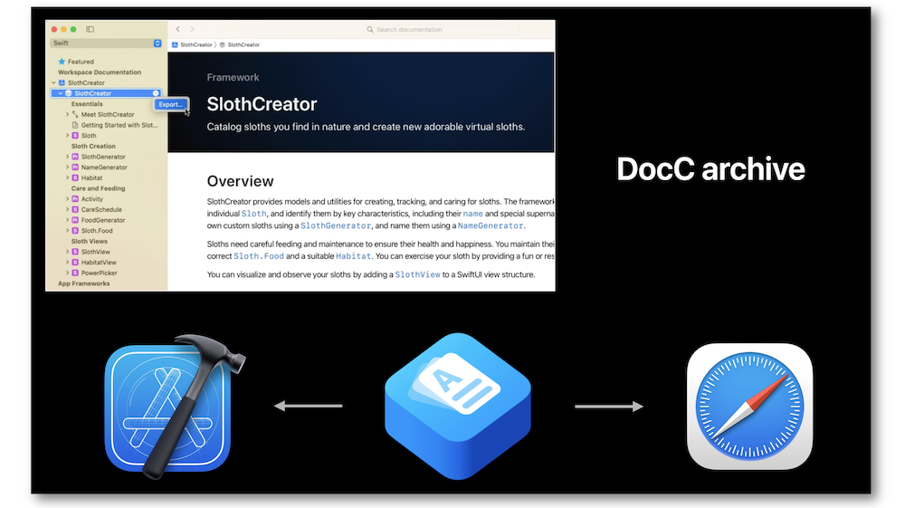
A dedicated base path may be necessary in some cases and the URL of a DocC archive hosted on a specific domain might have an unusual look.
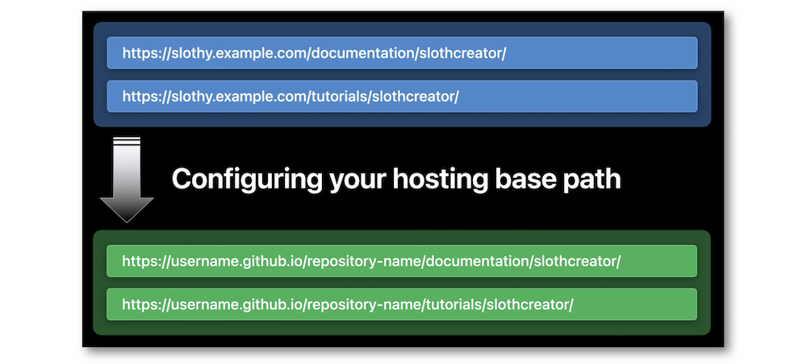
Xcode introduces a new build setting for this specific situation...
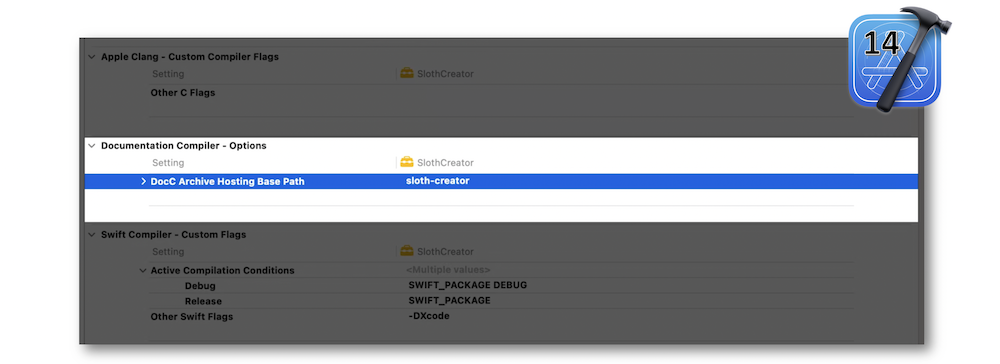
... and keeps on fostering the automating deployments by using the xcodebuild docbuild command-line interface and the Swift-DocC plug-in for Swift packages.
Browsing #
The new web navigation offers a sidebar that enhances the user experience by keeping the selections in the hierarchy while providing an efficient filter item to display the researched elements and that has also the capability to take into account some highlighted tags (among others) for its requests.
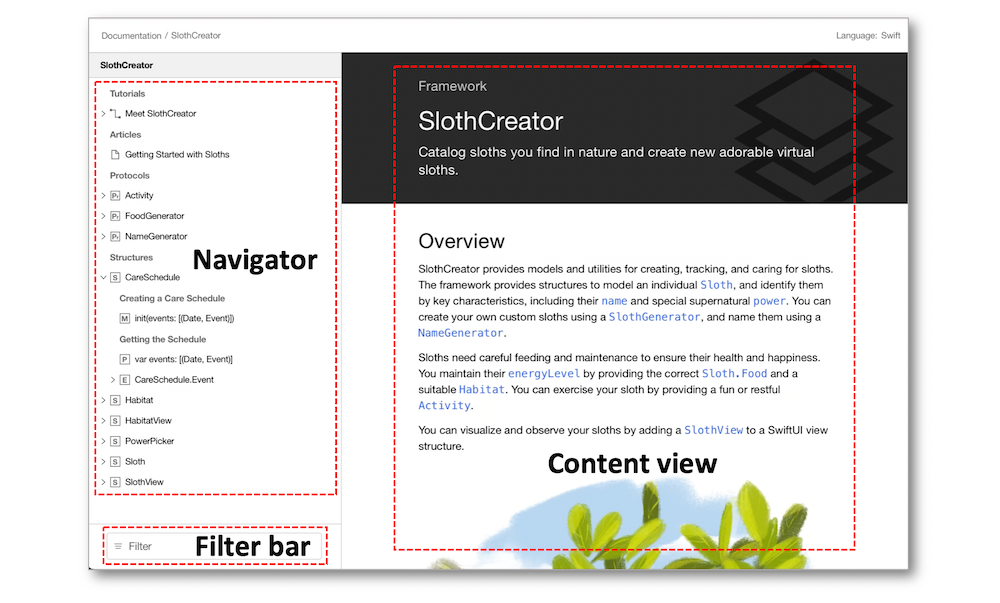
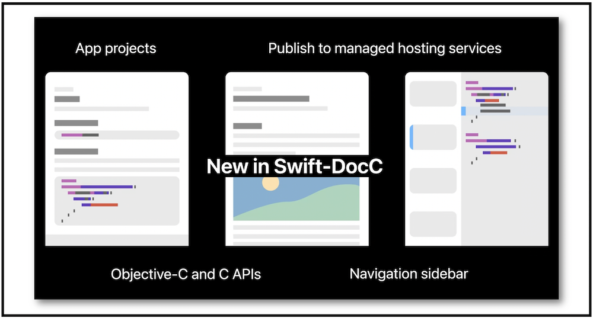